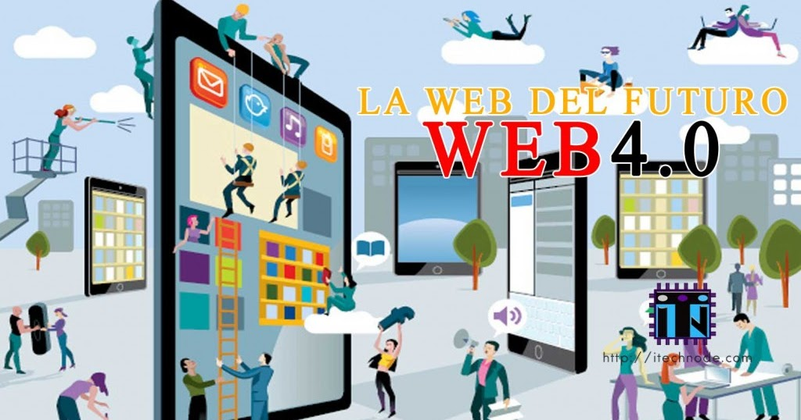

Línea del Tiempo Evolución de la Web
Web 1.0 "The Web"

Web 1.0 se refiere a un estado de la World Wide Web. Es en general un término usado para describir la Web antes del impacto de la «fiebre punto com» (1997-2001), que es vista por muchos como el momento en que el internet dio un giro.
Web 2.0 "The social Web"
La Web 2.0 supone un paso adelante en la evolución de Internet, para incorporar al usuario como un agente activo en su funcionamiento, y no como un mero cliente o receptor de la información. Esto pasa por sitios web dinámicos, en los que al usuario se le permita interactuar, generar contenido, o formar parte de comunidades virtuales.
Web 3.0 "The Semantic Web"

La web 3.0 es una extensión del WWW que, a través de agentes software, permiten encontrar, compartir e integrar la información más rápidamente. Otro aspecto relacionado con la web 3.0 es la transformación de la web en una base de datos, donde se llegaría a una situación en la que cada usuario tendría un perfil único en Internet basado en el historial de sus búsquedas.
Web 4.0 "The Ubiquitous Web"

La web 4.0 es aquella en donde la experiencia del usuario es elemental al diseñar o crear plataformas, productos y servicios. "Se potencia la web semántica con el aporte de la inteligencia artificial para así proveerle a los consumidores una mejor experiencia".
Regresar al inicio